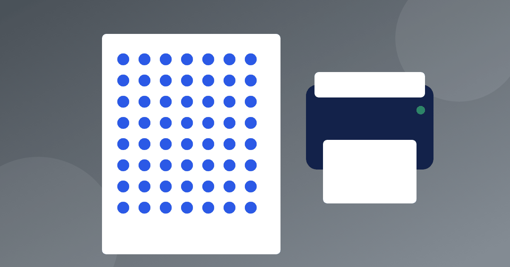

Распечатали таблицу умножения — что с ней делать дальше

Запрос «таблица умножения распечатать» знаком почти каждому родителю: хочется, чтобы нужный лист всегда был перед глазами. Но бумага сама ничего не выучит. Всё зависит от того, как ребёнок с ней обращается: подсматривает по привычке или проверяет себя. Разберёмся, какой лист выбрать, где его повесить и как постепенно убрать подсказки.
Какой лист выбрать
Для начала подойдёт обычная сетка 10 × 10. Числа от 1 до 10 стоят по строкам и по столбцам, а на пересечении стоит произведение. Такая таблица умножения для печати наглядна ещё и тем, что она зеркальна. Клетки 3 × 7 и 7 × 3 стоят в разных местах, но ответ у них один, 21. Ребёнок видит, что половина примеров на самом деле повторяется.
Второй вариант — отдельные листы на каждое число, столбиком: 6 × 1 = 6, 6 × 2 = 12 и так далее до 6 × 10 = 60. Для второклассника это спокойнее: на листе одно число, а не сто клеток. Берите крупный шрифт, формат А4 и чистый фон без картинок, иначе внимание уйдёт на рисунки.
Когда ребёнок уже знает умножение и подключается деление, пригодится таблица умножения и деления на одном листе. Такой лист, где таблица умножения и деления связана в одно целое, показывает пары действий. В ней примеры собраны в тройки: 6 × 4 = 24, 24 ÷ 4 = 6, 24 ÷ 6 = 4. Это помогает понять, что деление — то же умножение, только с другой стороны.
Бумага и печать
Есть практичные мелочи, о которых вспоминают уже после того, как лист вышел из принтера. Хорошая таблица умножения для печати проста: крупные цифры, без фона и рамок. Если вы будете искать, где сделать таблица умножения распечатать за пять минут, сгодится обычный домашний принтер и белая бумага. Чёрно-белая печать подходит, цвет нужен разве что для выделения строки, над которой вы сейчас работаете. Хороший лист можно вложить в файл или заламинировать: так на него не страшны чайные пятна, а ещё на нём можно писать маркером для стирания и каждую неделю отмечать новую строку.
Если вы выбираете таблицу умножения для печати впервые, заранее распечатайте две копии, одну для стены, другую для рюкзака или рабочей папки. Тогда ребёнку не придётся ничего снимать со стены, а дома и в школе перед глазами будет один и тот же знакомый лист.
Где повесить
Лучше одно-два места, а не вся квартира. Подойдёт то, где ребёнок бывает каждый день и может задержаться на полминуты.
- над рабочим столом, на уровне глаз сидящего ребёнка;
- на дверце холодильника, пока греется ужин;
- у зеркала в ванной, пока чистятся зубы;
- у входной двери, пока надеваются ботинки.
Раз в неделю меняйте лист: сегодня на виду шестёрки, через неделю семёрки. Пёстрая стена, на которой всё сразу, перестаёт замечаться уже через несколько дней.
Как работать с листом и не списывать
Главное правило: лист нужен для проверки, а не для ответа. Сначала ответ говорится вслух, и только потом взгляд падает на таблицу. Если ребёнок привык сразу смотреть, закройте нужную строку ладонью или полоской бумаги. Рабочий порядок такой:
- прочитайте строку вслух один раз, например «шестью семь — сорок два»;
- закройте её и повторите по памяти;
- откройте и сверьтесь;
- примеры с ошибкой отметьте точкой простым карандашом, не красным маркером.
Спустя несколько дней точки покажут, какие примеры не даются. Скорее всего, их наберётся всего три-четыре, и заниматься можно именно ими. О том, как строить такие занятия, мы писали в статье как выучить таблицу умножения.
Версии с пропусками
Полная таблица со временем превращается в обои. Тогда нужна версия, в которой часть ответов спрятана. Идти можно по трём ступеням.
- Пропущено каждое третье число. Например, строка семёрки: 7 × 2 = __, 7 × 3 = 21, 7 × 4 = __, 7 × 5 = 35, 7 × 6 = __. Ребёнок вписывает 14, 28 и 42.
- Оставлены ответы только на лёгкие примеры, а трудные нужно вписать самому.
- Пустая сетка 10 × 10, которую ребёнок заполняет с нуля, начиная с тех строк, что знает лучше всего.
Для деления сработает такой же приём: 42 ÷ 7 = __, 56 ÷ 8 = __. Ответы 6 и 7 ребёнок может проверить обратным действием, умножив их на делитель.
Что есть у нас
В разделе для родителей нашего тренажёра есть страница печати. Там можно распечатать таблицу умножения для печати и карточки с примерами и вырезать их. Регистрация для этого не нужна. Карточки удобны там, где лист не поместится: в дороге, на кухне, в портфеле. Подробнее о них в статье про карточки для таблицы умножения.
Когда лист пора снимать
Если ребёнок несколько дней подряд отвечает на примеры строки, даже не поднимая глаз, переверните лист обратной стороной. Он останется на месте на случай сомнения, но не будет мозолить глаза. Не стоит снимать его при первой же ошибке: ошибка в одном примере ещё не повод считать, что строка не выучена. Разбор типичных ошибок взрослых есть в статье что родители делают не так.